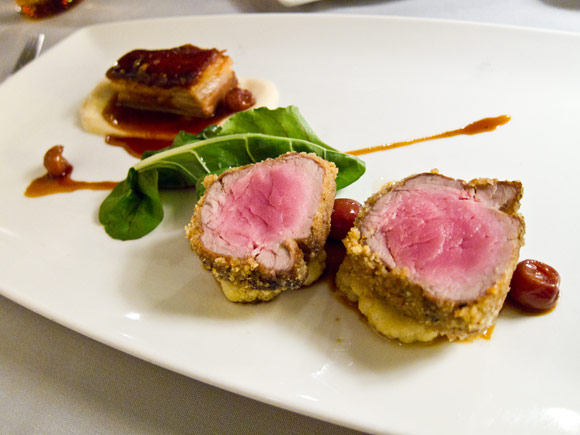
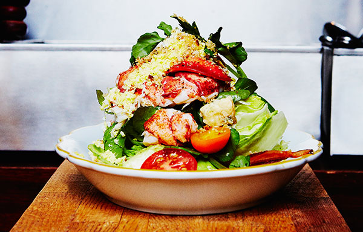
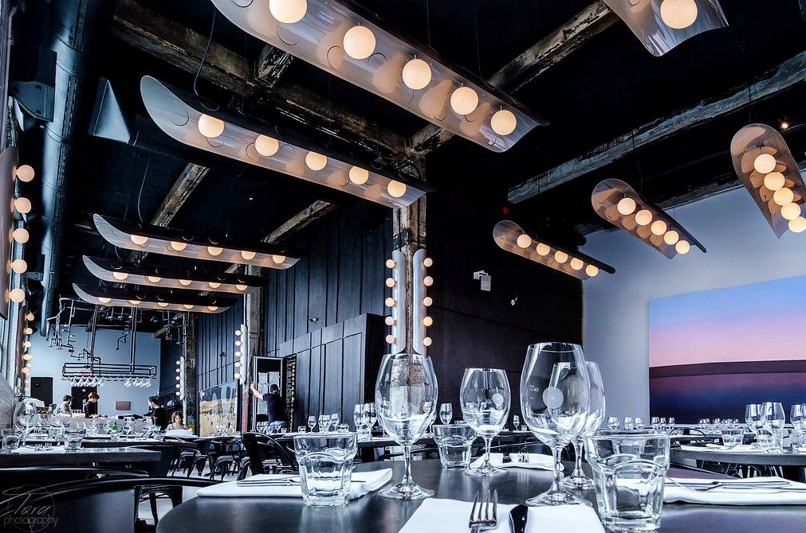
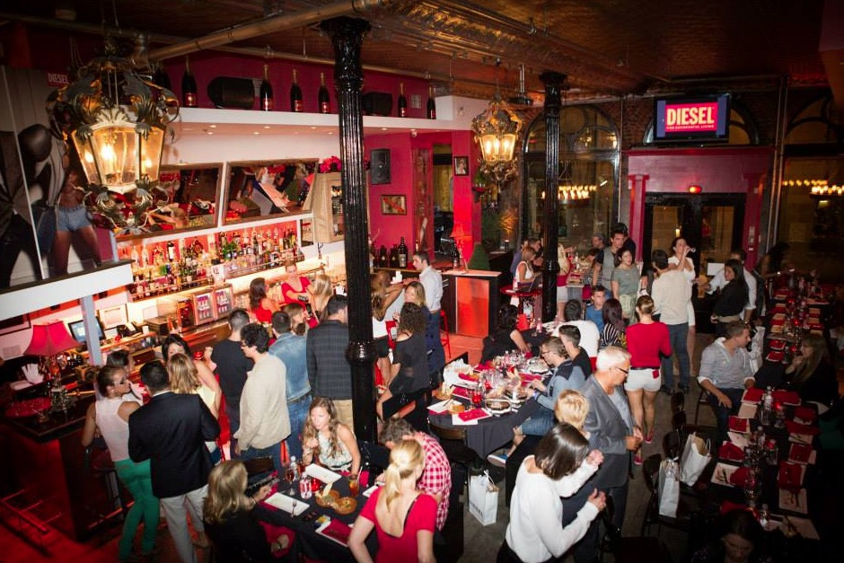
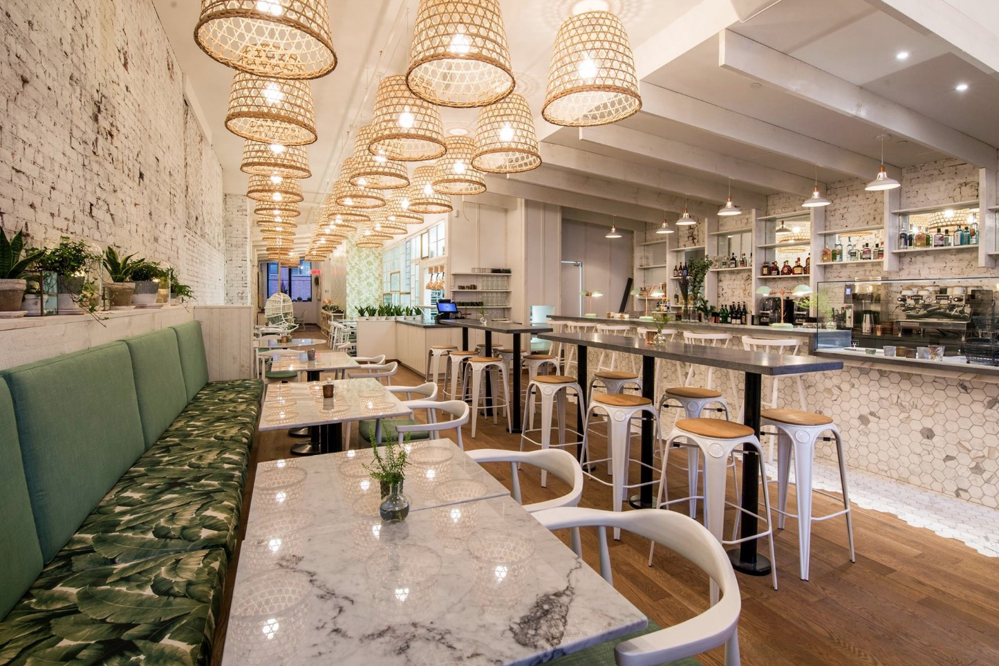

Foods & Restaurants
1. Le Club Chasse et Péche |
| 
Like only a hunter or fishermans pride can produce, the dishes here exude respect for their ingredients and showcase the simple flavours nature has to offer. Le Club Chasse et Péche offers a comfortably chic fine dining experience with a contemporary menu. Try the highly appraised duck magret topped with sunchoke, blackberries and wildflowers honey. Expect attentive service from a staff that knows the predominantly French wine list like the back of their hand. Definitely dont skip their dazzling dessert menu because the caramel and milk chocolate tart with dark chocolate sorbet has been raved about time and time again.
|
2. Toqué! |
| 
Montréal Toqué! was ranked as the number 1 restaurant in Canada by a panel of chefs, critics and diners, and not without good reason. As you may have noticed from the pictures, its dishes are a legitimate work of art! Chef Normand Laprise only serves-up the freshest market ingredients and puts special emphasis on local Quebec products. Begin by savouring their renown first course creations like the duck confit and foie gras tortellini. The main courses range from gastronomic delights like cavatelli pasta with arugula and shiitake mushrooms to suckling pig loin. Sink your spoons into their decadent iced raspberry parfait for dessert.
|
3. Le Serpent |
| 
Do not let the name Old Montréal fool you, Le Serpent is a newly-opened sleek and modern restaurant that attracts an urban-chic crowd. Even with the huge windows and high ceilings that characterize this converted warehouse, the restaurant is not too noisy for an intimate conversation. The selection of fine Italian classics are as full-flavoured as they are comforting. The toughest decision of the night will be to choose between their delicious list of pasta, risotto, seafood and meat. The wine menu, which has options for purchasing by the glass, is an impressive inventory of reasonably-priced bottles, many of which are rare finds.
|
4. Santos Tapas Bar |
| 
Santos is a tapas bar with a mission to feed and amuse. The restaurant serves traditional Spanish food within a lively atmosphere. Sip on one of their creative cocktails, wine, or sangria while bumping to the tunes of the live DJ every night. The restaurant is open from Tuesday to Saturday, however, their Tuesday Ladies Night is not to be missed. From 6-10pm, ladies can spend 25$ on tapas and enjoy free drinks! Choose from tapas like beef and fish tacos and fried calamari to pair with a cocktail. If you are looking for an exciting night out that features great food, Santos is the place for you!
|
5. LOV |
| 
It is easy to fall in love with LOV the second you walk in. The botanical garden theme is bright and inviting, each table is adorned with a terrarium, and charming wooden wicker seats hang from the ceiling. LOV (Local, Organic, Vegetarian) brings fine cuisine to vegan and vegetarian dishes. Try the kale mac and cheese entrée made with casarecce pasta and a squash cheese sauce. Take a look at their list of organic wine and beer or sip one of their zesty botanical cocktails. For vegans, vegetarians and meat eaters alike, you are sure to find something to tickle your tastebuds at LOV.
|